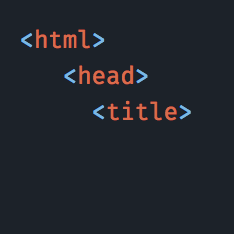

Open Source Repositories
Bosun VS Code Extension
This extension provides syntax highlighting, OpenTSBD metric path completion, and config validation to make the whole Bosun development experience smoother when using VS Code.
VS Code Dark Theme
A custom dark theme for VS Code.
